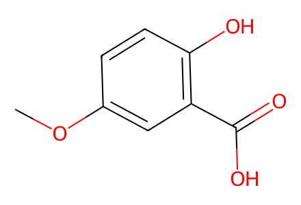
COc1ccc(O)c(C(=O)O)c1Available SI synthetic preparation network S20-S40 plus experimentally observed side branches S9/S10/S17. Main article unavailable; precursor5 and optimization substrateS1 are source-shown preparation boundaries. Failed enzymatic chlorination and undrawn crudeS10 do not establish additional isolated structures. Facts compiled deterministically; independent review pending.
完整 JSON · 逐步 CSV · 路线序列 · SDF · HRMS 核对
| 事件 | 分子连接 | 报告产率 | Canonical reaction SMILES |
|---|---|---|---|
| C01 | 8 → 11 | 11: 89% | COc1ccc(O)c(C(=O)O)c1>>COc1ccc(OCc2ccccc2)c(C(=O)N(C)C)c1 |
| C02 | 11 → 12 | 12: 65% | COc1ccc(OCc2ccccc2)c(C(=O)N(C)C)c1>>COc1ccc(OCc2ccccc2)c(C(=O)N(C)C)c1C=O |
| C03 | 12 → 7 | 7: 90% | COc1ccc(OCc2ccccc2)c(C(=O)N(C)C)c1C=O>>COc1ccc(OCc2ccccc2)c2c1C(Sc1ccccc1)OC2=O |
| C04 | 7 + 5 → 13 | 13: 65% | COC1(C)C=CC(=O)O1.COc1ccc(OCc2ccccc2)c2c1C(Sc1ccccc1)OC2=O>>COc1ccc(OCc2ccccc2)c2c(O)c3c(c(O)c12)C(C)(OC)OC3=O |
| C05 | 13 → 14 | 14: 84% | COc1ccc(OCc2ccccc2)c2c(O)c3c(c(O)c12)C(C)(OC)OC3=O>>COc1ccc(OCc2ccccc2)c2c(OCC[Si](C)(C)C)c3c(c(OCC[Si](C)(C)C)c12)C(C)(OC)OC3=O |
| C06 | 14 → 15 | 15: 75% | COc1ccc(OCc2ccccc2)c2c(OCC[Si](C)(C)C)c3c(c(OCC[Si](C)(C)C)c12)C(C)(OC)OC3=O>>COc1ccc(O)c2c(OCC[Si](C)(C)C)c3c(c(OCC[Si](C)(C)C)c12)C(C)(OC)OC3=O |
| C07 | 15 → 16 | 16: 64% | COc1ccc(O)c2c(OCC[Si](C)(C)C)c3c(c(OCC[Si](C)(C)C)c12)C(C)(OC)OC3=O>>COc1cc(Br)c(O)c2c(OCC[Si](C)(C)C)c3c(c(OCC[Si](C)(C)C)c12)C(C)(OC)OC3=O |
| C08 | 16 → 17 | 17: 99% | COc1cc(Br)c(O)c2c(OCC[Si](C)(C)C)c3c(c(OCC[Si](C)(C)C)c12)C(C)(OC)OC3=O>>COC1(C)OC(=O)c2c(OCC[Si](C)(C)C)c3c(c(OCC[Si](C)(C)C)c21)C(=O)C=C(Br)C3=O |
| B01 | 10 → 19 | 19: 86% | COC(=O)c1cc(C)c(N)c(OC)c1>>COc1cc(C=O)cc(C)c1Cl |
| B02 | 19 → 21 | 21: 78% | COc1cc(C=O)cc(C)c1Cl>>COc1c(Cl)c(C)cc(C=O)c1Br |
| B03 | 21 + phosphonoacetate → S5 | S5: 97% | CCOC(=O)CP(=O)(OCC)OCC.COc1c(Cl)c(C)cc(C=O)c1Br>>CCOC(=O)/C=C/c1cc(C)c(Cl)c(OC)c1Br |
| B04 | S5 → S6 | S6: 96% | CCOC(=O)/C=C/c1cc(C)c(Cl)c(OC)c1Br>>CCOC(=O)CCc1cc(C)c(Cl)c(OC)c1Br |
| B05 | S6 → 9 | 9: 98% | CCOC(=O)CCc1cc(C)c(Cl)c(OC)c1Br>>COc1c(Cl)c(C)cc(CCC(=O)O)c1Br |
| B06 | 17 + 9 → 23 | 23: 76% | COC1(C)OC(=O)c2c(OCC[Si](C)(C)C)c3c(c(OCC[Si](C)(C)C)c21)C(=O)C=C(Br)C3=O.COc1c(Cl)c(C)cc(CCC(=O)O)c1Br>>COc1c(Cl)c(C)cc(CCC2=C(Br)C(=O)c3c(OCC[Si](C)(C)C)c4c(c(OCC[Si](C)(C)C)c3C2=O)C(C)(OC)OC4=O)c1Br |
| B07 | 23 → 24 | 24: 35% | COc1c(Cl)c(C)cc(CCC2=C(Br)C(=O)c3c(OCC[Si](C)(C)C)c4c(c(OCC[Si](C)(C)C)c3C2=O)C(C)(OC)OC4=O)c1Br>>COc1c(Cl)c(C)cc2c1C1=C(CC2)C(=O)c2c(OCC[Si](C)(C)C)c3c(c(OCC[Si](C)(C)C)c2C1=O)C(=O)OC3(C)OC |
| B08 | 24 → 2 | 2: 65% | COc1c(Cl)c(C)cc2c1C1=C(CC2)C(=O)c2c(OCC[Si](C)(C)C)c3c(c(OCC[Si](C)(C)C)c2C1=O)C(=O)OC3(C)OC>>COc1c(Cl)c(C)cc2ccc3c(c12)C(=O)c1c(O)c2c(c(O)c1C3=O)C(C)(OC)OC2=O |
| A01 | 27 → 28 | 28: 36% | COC(=O)c1ccc(N)c(OC)c1>>COC(=O)c1cc(OC)c(N)c(C(F)(F)F)c1 |
| A02 | 28 → S7 | S7: 54% | COC(=O)c1cc(OC)c(N)c(C(F)(F)F)c1>>COC(=O)c1cc(OC)c(Cl)c(C(F)(F)F)c1 |
| A03 | S7 → 29 | 29: 82% | COC(=O)c1cc(OC)c(Cl)c(C(F)(F)F)c1>>COc1cc(C=O)cc(C(F)(F)F)c1Cl |
| A04 | 29 → S8 | S8: 58% | COc1cc(C=O)cc(C(F)(F)F)c1Cl>>COc1c(Cl)c(C(F)(F)F)cc(C=O)c1Br |
| A05 | S8 + phosphonoacetate → 30 | 30: 84% | CCOC(=O)CP(=O)(OCC)OCC.COc1c(Cl)c(C(F)(F)F)cc(C=O)c1Br>>CCOC(=O)/C=C/c1cc(C(F)(F)F)c(Cl)c(OC)c1Br |
| A06 | 30 → S9 | S9: 99% | CCOC(=O)/C=C/c1cc(C(F)(F)F)c(Cl)c(OC)c1Br>>CCOC(=O)CCc1cc(C(F)(F)F)c(Cl)c(OC)c1Br |
| A07 | S9 → 26 | 26: 92% | CCOC(=O)CCc1cc(C(F)(F)F)c(Cl)c(OC)c1Br>>COc1c(Cl)c(C(F)(F)F)cc(CCC(=O)O)c1Br |
| A08 | 17 + 26 → 31 | 31: 65% | COC1(C)OC(=O)c2c(OCC[Si](C)(C)C)c3c(c(OCC[Si](C)(C)C)c21)C(=O)C=C(Br)C3=O.COc1c(Cl)c(C(F)(F)F)cc(CCC(=O)O)c1Br>>COc1c(Cl)c(C(F)(F)F)cc(CCC2=C(Br)C(=O)c3c(OCC[Si](C)(C)C)c4c(c(OCC[Si](C)(C)C)c3C2=O)C(C)(OC)OC4=O)c1Br |
| A09 | 31 → 25 | 25: 21% | COc1c(Cl)c(C(F)(F)F)cc(CCC2=C(Br)C(=O)c3c(OCC[Si](C)(C)C)c4c(c(OCC[Si](C)(C)C)c3C2=O)C(C)(OC)OC4=O)c1Br>>COc1c(Cl)c(C(F)(F)F)cc2ccc3c(c12)C(=O)c1c(O)c2c(c(O)c1C3=O)C(C)(OC)OC2=O |
| A10 | 25 → 1 | 1: 75% | COc1c(Cl)c(C(F)(F)F)cc2ccc3c(c12)C(=O)c1c(O)c2c(c(O)c1C3=O)C(C)(OC)OC2=O>>COc1c(Cl)c(C(Cl)(Cl)Cl)cc2ccc3c(c12)C(=O)c1c(O)c2c(c(O)c1C3=O)C(C)(OC)OC2=O |
| X01 | 14 → S3 | not reported | COc1ccc(OCc2ccccc2)c2c(OCC[Si](C)(C)C)c3c(c(OCC[Si](C)(C)C)c12)C(C)(OC)OC3=O>>COC1(C)OC(=O)c2c(OCC[Si](C)(C)C)c3c(c(OCC[Si](C)(C)C)c21)C(=O)C=CC3=O |
| X02 | 15 → 16 + 17 | 16: 27%; 17: 36% | COc1ccc(O)c2c(OCC[Si](C)(C)C)c3c(c(OCC[Si](C)(C)C)c12)C(C)(OC)OC3=O>>COC1(C)OC(=O)c2c(OCC[Si](C)(C)C)c3c(c(OCC[Si](C)(C)C)c21)C(=O)C=C(Br)C3=O.COc1cc(Br)c(O)c2c(OCC[Si](C)(C)C)c3c(c(OCC[Si](C)(C)C)c12)C(C)(OC)OC3=O |
| X03 | 19 → S4 | not reported | COc1cc(C=O)cc(C)c1Cl>>[2H]c1c(C=O)cc(C)c(Cl)c1OC |

COc1ccc(O)c(C(=O)O)c1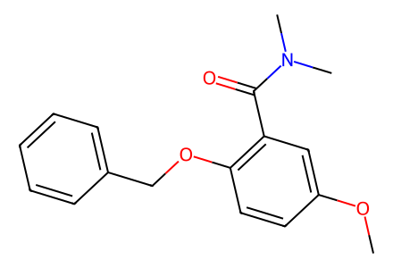
COc1ccc(OCc2ccccc2)c(C(=O)N(C)C)c1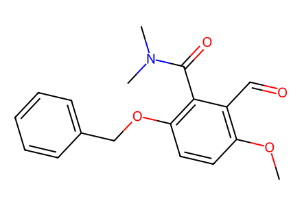
COc1ccc(OCc2ccccc2)c(C(=O)N(C)C)c1C=O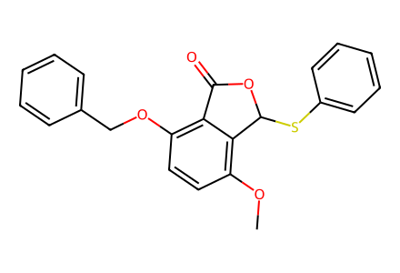
COc1ccc(OCc2ccccc2)c2c1C(Sc1ccccc1)OC2=O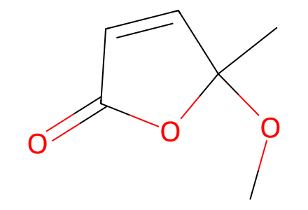
COC1(C)C=CC(=O)O1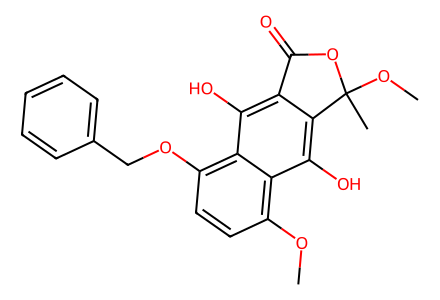
COc1ccc(OCc2ccccc2)c2c(O)c3c(c(O)c12)C(C)(OC)OC3=O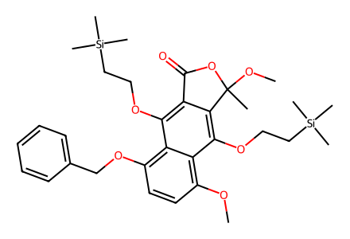
COc1ccc(OCc2ccccc2)c2c(OCC[Si](C)(C)C)c3c(c(OCC[Si](C)(C)C)c12)C(C)(OC)OC3=O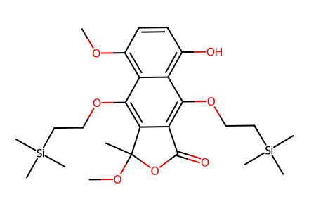
COc1ccc(O)c2c(OCC[Si](C)(C)C)c3c(c(OCC[Si](C)(C)C)c12)C(C)(OC)OC3=O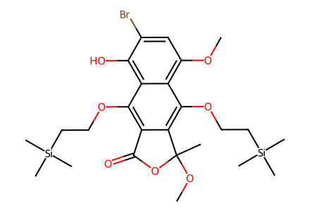
COc1cc(Br)c(O)c2c(OCC[Si](C)(C)C)c3c(c(OCC[Si](C)(C)C)c12)C(C)(OC)OC3=O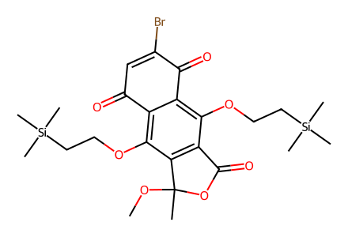
COC1(C)OC(=O)c2c(OCC[Si](C)(C)C)c3c(c(OCC[Si](C)(C)C)c21)C(=O)C=C(Br)C3=O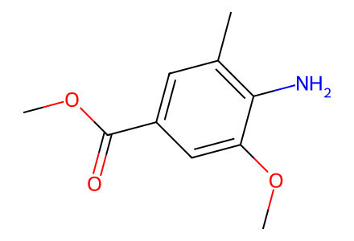
COC(=O)c1cc(C)c(N)c(OC)c1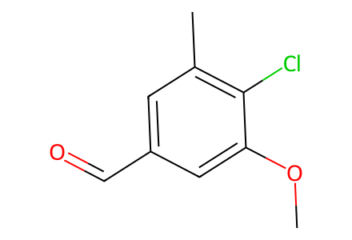
COc1cc(C=O)cc(C)c1Cl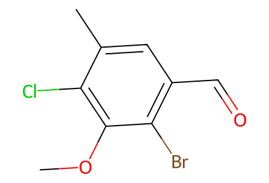
COc1c(Cl)c(C)cc(C=O)c1Br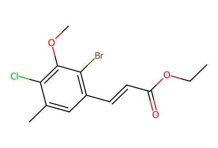
CCOC(=O)/C=C/c1cc(C)c(Cl)c(OC)c1Br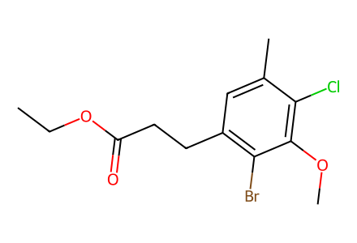
CCOC(=O)CCc1cc(C)c(Cl)c(OC)c1Br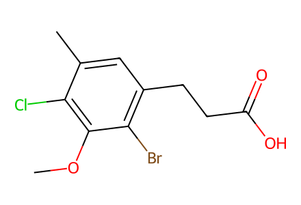
COc1c(Cl)c(C)cc(CCC(=O)O)c1Br
CCOC(=O)CP(=O)(OCC)OCC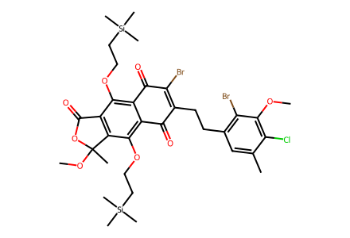
COc1c(Cl)c(C)cc(CCC2=C(Br)C(=O)c3c(OCC[Si](C)(C)C)c4c(c(OCC[Si](C)(C)C)c3C2=O)C(C)(OC)OC4=O)c1Br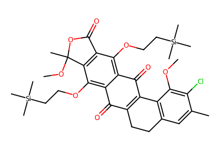
COc1c(Cl)c(C)cc2c1C1=C(CC2)C(=O)c2c(OCC[Si](C)(C)C)c3c(c(OCC[Si](C)(C)C)c2C1=O)C(=O)OC3(C)OC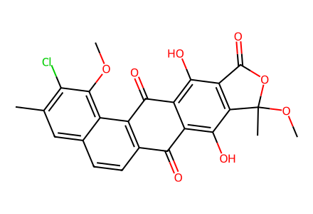
COc1c(Cl)c(C)cc2ccc3c(c12)C(=O)c1c(O)c2c(c(O)c1C3=O)C(C)(OC)OC2=O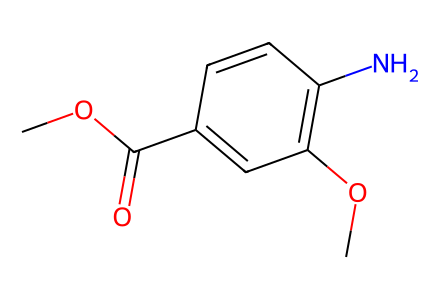
COC(=O)c1ccc(N)c(OC)c1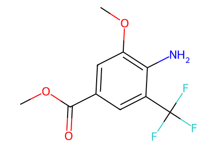
COC(=O)c1cc(OC)c(N)c(C(F)(F)F)c1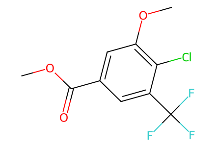
COC(=O)c1cc(OC)c(Cl)c(C(F)(F)F)c1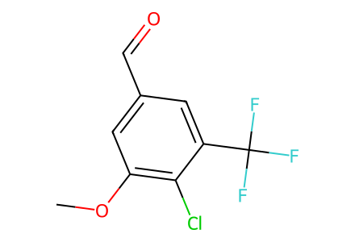
COc1cc(C=O)cc(C(F)(F)F)c1Cl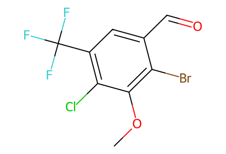
COc1c(Cl)c(C(F)(F)F)cc(C=O)c1Br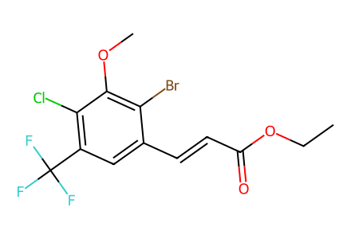
CCOC(=O)/C=C/c1cc(C(F)(F)F)c(Cl)c(OC)c1Br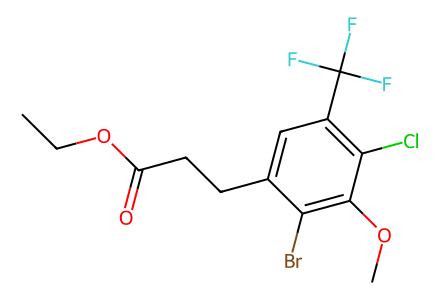
CCOC(=O)CCc1cc(C(F)(F)F)c(Cl)c(OC)c1Br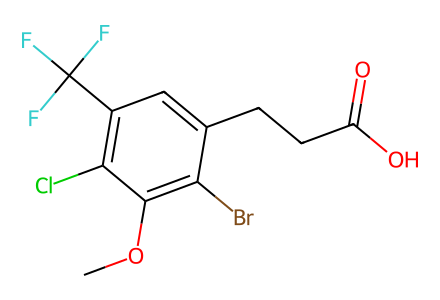
COc1c(Cl)c(C(F)(F)F)cc(CCC(=O)O)c1Br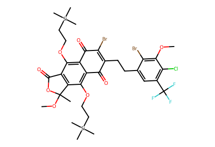
COc1c(Cl)c(C(F)(F)F)cc(CCC2=C(Br)C(=O)c3c(OCC[Si](C)(C)C)c4c(c(OCC[Si](C)(C)C)c3C2=O)C(C)(OC)OC4=O)c1Br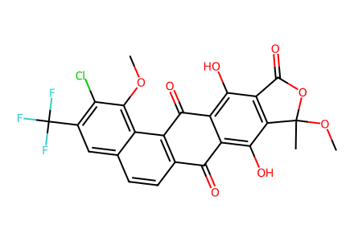
COc1c(Cl)c(C(F)(F)F)cc2ccc3c(c12)C(=O)c1c(O)c2c(c(O)c1C3=O)C(C)(OC)OC2=O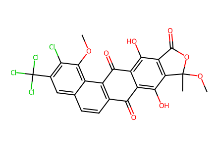
COc1c(Cl)c(C(Cl)(Cl)Cl)cc2ccc3c(c12)C(=O)c1c(O)c2c(c(O)c1C3=O)C(C)(OC)OC2=O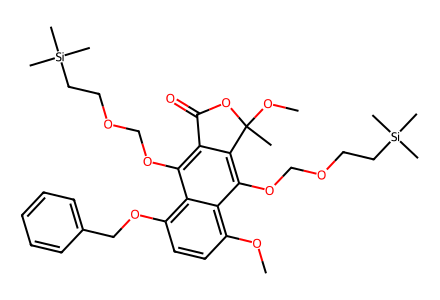
COc1ccc(OCc2ccccc2)c2c(OCOCC[Si](C)(C)C)c3c(c(OCOCC[Si](C)(C)C)c12)C(C)(OC)OC3=O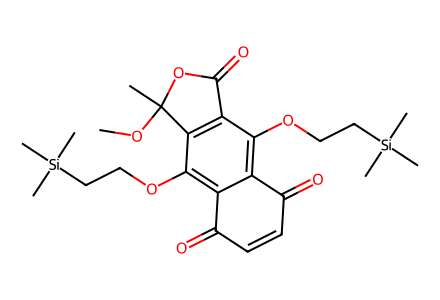
COC1(C)OC(=O)c2c(OCC[Si](C)(C)C)c3c(c(OCC[Si](C)(C)C)c21)C(=O)C=CC3=O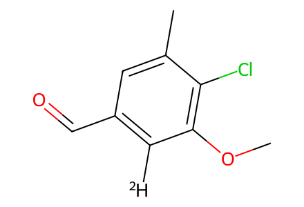
[2H]c1c(C=O)cc(C)c(Cl)c1OC